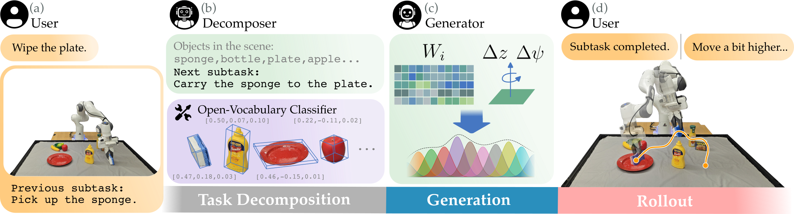
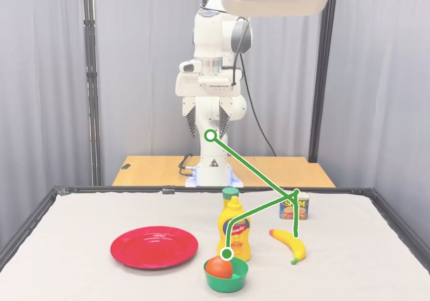
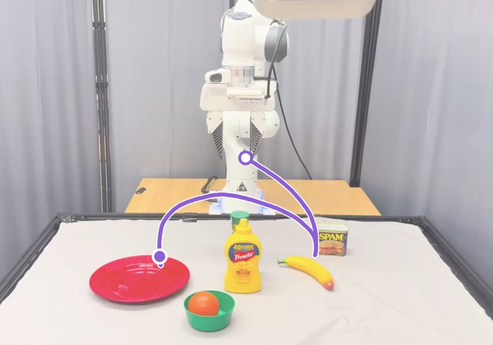
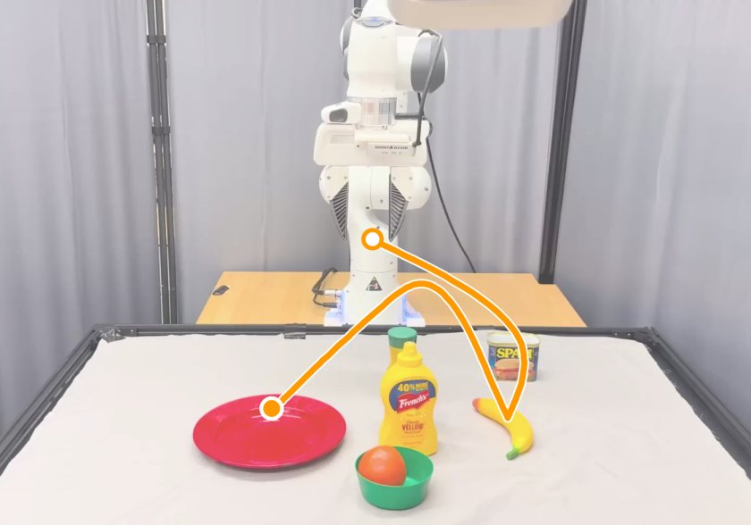

Abstract
Enabling robots to perform novel manipulation tasks from natural language instructions remains a fundamental challenge in robotics, despite significant progress in generalized problem solving with foundational models. Large vision and language models (VLMs) are capable of processing high-dimensional input data for visual scene and language understanding, as well as decomposing tasks into a sequence of logical steps; however, they struggle to ground those steps in embodied robot motion. On the other hand, robotics foundation models output action commands, but require in-domain fine-tuning or experience before they are able to perform novel tasks successfully. At its core, there still remains the fundamental challenge of connecting abstract task reasoning with low-level motion control. To address this disconnect, we propose Language Movement Primitives (LMPs), a framework that grounds VLM reasoning in Dynamic Movement Primitive (DMP) parameterization. Our key insight is that DMPs provide a small number of interpretable parameters, and VLMs can set these parameters to specify diverse, continuous, and stable trajectories. Put another way: VLMs can reason over free-form natural language task descriptions, and semantically ground their desired motions into DMPs — bridging the gap between high-level task reasoning and low-level position and velocity control. Building on this combination of VLMs and DMPs, we formulate our LMP pipeline for zero-shot robot manipulation that effectively completes tabletop manipulation problems by generating a sequence of DMP motions. Across 20 real-world manipulation tasks, we show that LMP achieves 80% task success as compared to 31% for the best-performing baseline.
Overview

LMP pipeline for a single subtask rollout. $(a)$ The robot begins with a user-provided task description. The robot then collects an image capturing the current environment state, and remembers any previously performed subtask(s). $(b)$ The decomposer $\pi_D$ identifies scene objects and outputs a subtask for the next DMP to complete. An open-vocabulary classifier and depth sensing are used to estimate 3D object locations. The scene description and proposed subtask are then forwarded to the DMP weight generator $\pi_G$. $(c)$ The generator predicts DMP weights and auxiliary parameters to define the low-level reference trajectory. $(d)$ The robot tracks the continuous trajectory generated from the predicted DMP parameters. Optionally, the user may observe the robot and provide natural-language feedback about any mistakes. If the user gives this refinement $r$, then the robot resets the rollout and the process repeats from $(b)$.
Baselines
What each method receives.
| LMP | LMP J/F | TrajGen | π0.5 | |
|---|---|---|---|---|
| Perception | Gemini Robotics-ER 1.5 labels, LangSAM masks, depth → 3D poses | Same as LMP | LangSAM + depth, called from generated code | Raw scene and wrist images |
| Task decomposition | Gemini Robotics-ER 1.5 | Same as LMP | None, GPT-5.2 plans in its own code | None, task instruction only |
| Language model | GPT-5.2 | GPT-5.2 | GPT-5.2 | π0.5 (end-to-end) |
| Motion | DMP weights + goal offset | DMP weights + goal offset | Waypoints from generated code | End-effector velocity |
| In-domain data | None | None | None | 5 demos per task (155 total) |
| Feedback | Human, up to 3 rounds | None | None | None |
Experiments
Spatial Reasoning
Understanding spatial relations between objects in the environment.
Move the fruit which is on the right towards the bottle.
Pick the chip bag which is to the right of the can.
Pick the chip bag on the left of the table.
Insert the bread into the toaster.
Move the can to the center of the table.
Pick the apple from the bowl and place it on the table.
Pick the rightmost can.
Pick up the bowl.
Pick the fruit in the middle.
Obstacle Awareness
Recognizing configurations the robot must avoid.
Move the banana near the pear.
Place the apple in the bowl.
Drop the ball into the cup.
Put the banana on the plate.
Semantic Understanding
Inferring intent from under-specified instructions.
Wipe the plate.
Move the lonely object to the others.
Hang the shirt.
We evaluate LMP on 20 household tasks, assessing overall task success rate compared to $\pi_{0.5}$ and TrajGen.
TrajGen
X7
$\pi_{0.5}$
X10
LMP
X5
Put the banana on the plate.
TrajGen
X13
$\pi_{0.5}$
X7
LMP
X5
Wipe the plate.
TrajGen
X9
$\pi_{0.5}$
X12
LMP
X4
Hang the shirt.
TrajGen
X9
$\pi_{0.5}$
X10
LMP
X4
Move the fruit which is on the right towards the bottle.
Gripper Paths
The gripper's path in each evaluation above, tracked from the video and drawn on its first frame. Open circle: start. Filled circle: end.

TrajGen
$\pi_{0.5}$
LMPPut the banana on the plate.
Reactive Adaptation
Adapt to dynamic changes in the environment in real-time.
Knock over the left bottle.
Wipe the plate.
Place the apple in the bowl.
Put the banana on the plate.
DMP Playground
Drag the weights to reshape the motion. Examples start from the weights the generator produced.
Subtask
3D view could not load.
DMP
All weights zero
Goal
WeightsPosition (m)
Weights as JSON

Implementation
Values from the code that ran the experiments.
DMP
$$\tau \dot z = \alpha_z \beta_z (g - \xi) - \alpha_z z + F\, x \frac{\sum_i w_i \psi_i(\tilde t)}{\sum_i \psi_i(\tilde t)}, \qquad \tau \dot \xi = z, \qquad x = e^{-\alpha_x \tilde t^{3}}, \qquad \tilde t = \min(t/\tau,\, 1)$$
| x, y, z, yaw | Gripper | |
|---|---|---|
| Basis | 11 Gaussians, centers $0, 0.1, \dots, 1$, $h = 1600$ | 11 steps |
| $\beta_z$ | 5.2 | 10.5 |
| $\alpha_z$ | 20.8 ($4\beta_z$) | 8.4 ($0.8\beta_z$) |
| Forcing gain $F$ | 2 | 8 |
| Phase decay $\alpha_x$ | 4.5 | 0 |
| $\tau$ | 1 | 1 |
| Generator weight range | $[-0.9, 0.9]$ | $[-1, 1]$ |
| Weight scale | ×20 (x, y, z), ×200 (yaw) | ×10 |
| Command | Position and yaw setpoint | Close above 0.5, open below |
| Integration | Step 0.003 per control cycle, until $x < 0.0112$ | |
Controller
| Robot | Franka Emika Panda, joint velocity commands |
|---|---|
| Tracking | Cartesian P control on position and yaw, $k_p = 1.2$ |
| Velocity mapping | $\dot q = J^{+} \dot x$, $\lVert \dot q \rVert \le 1$ |
| Workspace guards | $x \le 0.8$ m, $z \ge 0.065$ m |
| Camera | Orbbec Femto Mega (RGB-D) |
Models
| Model | Settings | |
|---|---|---|
| Object labels | gemini-robotics-er-1.5-preview | Temperature 0.5, thinking budget 0 |
| Segmentation | LangSAM (Grounding DINO base, SAM 2.1 Hiera-S) | Box threshold 0.3, text threshold 0.25 |
| Decomposer | gemini-robotics-er-1.5-preview | Temperature 0, thinking budget 0 |
| Generator | gpt-5.2 | Temperature 0, 480×270 scene image |
| Output parsing | Text from the first { to the last }, read as JSON | |
| Judge | Human | Up to 3 rounds of feedback |
| TrajGen | gpt-5.2 | Temperature 0, detect_object() box threshold 0.15 |
Prompts
Fields in bold are filled at runtime.
Decomposer Gemini Robotics-ER 1.5
System prompt
You are a helpful assistant that proposes high-level subtasks for robot manipulation based on video evidence.
<think>
your reasoning
</think>
<answer>
your answer
</answer>
<OVERALL_TASK>User prompt
The overall goal is <OVERALL_TASK>.
The agent in the video is currently performing one subtask out of many to complete this instruction.
In the environment, the available OBJECT are:
<OBJ_LIST>
So far, the agent has completed the following subtasks:
<PRIOR_TASKS>
For the agent in the video, what is the most plausible next immediate subtask?
Also identify whether any obstacles lie along the execution path of this subtask.
When obstacles are present, generate a collision avoidance plan that enables successful task completion.
Collision avoidance plan template:
Potential collision with <OBSTACLE>, avoid by <DEVIATION_STRATEGY>.
Rules (must follow strictly):
- Prefer multi-dimensional deviations, e.g., combining at least two of:
lifting upward, or shifting forward, shifting left, shifting right or otherwise.
- Deviation must be local and temporary, defined only in the gripper frame.
- Do not reference the task goal, target object, or intended path, deviation must be goal-agnostic.
- Choose the primary horizontal deviation orthogonal to the obstacle position:
- Obstacle on left/right -> deviate left/right.
- Obstacle in front/back -> deviate forward/backward.
Choose from the following options, and instantiate with the correct object if needed:
- REACH(<OBJECT>)
- CARRY(<OBJECT>) to (<OBJECT>), <collision avoidance plan> (if needed)
- WIPING(<OBJECT>)
- RELEASE(<OBJECT>)Generator GPT-5.2
System prompt
You are a helpful assistant that generates dynamics motion primitive weights for a given robot manipulation task.
You need to generate ${.total_weights} weights for a Dynamic Movement Primitive (DMP) with ${.dimensions} dimensions and ${.num_functions} basis functions.
Internally, you need to first analyze the provided scene description and determine if there are any potential collisions between the robot and other objects in the environment on its path to the goal.
Your generated weights should help the robot avoid collisions while efficiently reaching the goal with a smooth trajectory.
**Understanding DMPs and Weight Function:**
A DMP generates smooth trajectories from a start position to a goal position. The weights you generate control a 'forcing function' that shapes the trajectory. Here's how it works:
1. **Basis Functions**: The DMP uses ${.num_functions} radial basis functions distributed along the movement timeline (from start to end).
We use equaldistant Gaussian basis functions:
basis_locations = np.linspace(0.0, 1.0, n_functions, dtype=np.float32)
basis_variance = np.array([1.0 / (0.25 * (1.0 / (n_functions - 1)))**2] * n_functions, dtype=np.float32)
psi = torch.exp(-basis_variance * (x - basis_locations) ** 2)
2. **Weight Role**: Each weight corresponds to one basis function in one dimension. The weights determine how much each basis function contributes to the overall movement shape
3. **Trajectory Generation**: The DMP combines:
- A stable attractor (pulls toward goal)
- Your weighted forcing function (creates the desired movement pattern)
**Weight Guidelines:**
- Weights should be between -0.9 and 0.9 (both positive and negative values are useful)
- **Early weights** (indices 0-3): Affect movement near the start position
- **Middle weights** (indices 4-6): Affect movement in the middle of the trajectory
- **Late weights** (indices 7-10): Affect movement near the goal position
- **Weight magnitude**: Larger absolute values create more pronounced effects
- **Symmetric positive and negative weights**: These are **not** as important as the DMPs will always be attracted to the goal position. Adjust weights prioritize on obstacle locations and desired path shape.
**Zero-By-Default Rule (Strict)**
- Default output MUST be all zeros for every motion dimension (x, y, z, qz, etc.).
- Non-zero weights are allowed ONLY when explicitly required by:
(1) obstacle detected or obstacle avoidance plan given, or
(2) an explicitly stated motion ordering constraint that cannot be satisfied with zeros
(e.g., "lift immediately at the very beginning" for carry tasks), or
(3) an explicit instruction in the action plan / correction history or by the trajectory requirements of the task itself.
- If none of the above triggers apply, output exactly all zeros.
- Prefer early non-zero weights over late non-zero weights when non zero weights are required.
**Direction Guidelines:**
- Positive weights in a dimension will push the trajectory in the positive direction of that dimension, while negative weights will push it in the negative direction.
- For example, increasing x means pushing the trajectory to the front, closer to the camera and further from the robot base.
- Increasing y means pushing the trajectory to the right side of the image.
- Increasing z means pushing the trajectory upwards, away from the table.
Default Assumption
- Unless explicitly instructed otherwise, or unless required to avoid an obstacle or constraint, the DMP should not be strongly influenced at the very end of the trajectory.
Boundary Indices
- Beginning of trajectory: indices 0-3
- End of Trajectory: indices 8-10
Required behavior
- By default, keep the absolute values of weights at the end SMALL relative to the beginning and middle of the trajectory
- Do NOT place large-magnitude weights at the last indices by default.
- Do NOT force activation or supression at the very end unless required.
- These boundary weights should act as gentle bias terms, not dominant drivers of motion.
When to Override
- It is acceptable to use large magnitudes at the boundaries only if:
- Explicity told to do so, or
- Necessary to avoid an obstacle or enforce a constraint
**Gripper Guidelines:**
Core Rules
- The gripper command is binary, but it is driven by a continuous DMP trajectory.
- The role of the weight vector is to control when the DMP trajectory crosses the internal “close” region.
- Do not think in terms of partially closing the gripper.
- Think in terms of making the trajectory cross the close condition earlier or later in time.
Weight Vector Structure
- The gripper weight vector has indices 0-10 (11 total values).
- Each index contributes continuously to the DMP trajectory over time.
- The distribution and magnitude of weights determine when the trajectory rises enough to trigger closure.
Value Limits
- Minimum value: -1
- Maximum value: +1
- Larger magnitude = stronger influence on the DMP at that phase.
Examples (when the starting point is at 0 / open, goal is at 1 / closed, and the close condition is at 0.5):
-Trajectory crosses the close condition around ~75% of the motion
[-1, -1, -0.5, -0.5, -0.5, -0.5, -0.5, 0.5, 0.2, 0, 0]
-Interpretation
-Strong negative bias dominates early and mid trajectory
- Trajectory begins rising late
- Close condition is reached before the final index
-Trajectory crosses the close condition very late (~95%)
[-1, -1, -1, -1, -1, -1, -1, -1, -1, -1, 1]
-Interpretation
- Trajectory is strongly suppressed for almost the entire motion
- A single late positive term forces a late crossing
- Abrupt late activation is valid and expected
Generation Rules
- Do NOT describe the gripper as “partially closed.”
- Do NOT reason in terms of percentages of closure.
- Do NOT assume the trajectory must cross early to be valid.
- Late or abrupt crossings are correct behavior when contact happens late.
- If uncertain, delay the crossing rather than advancing it.
How Timing is Controlled
- Large negative values held longer delay the trajectory from reaching the close condition.
- Introducing positive values later causes the trajectory to rise late.
- Concentrating strong positives at the very end forces a very late crossing.
- There is no requirement that the sign must flip early or smoothly.
Default behavior:
- Majority of gripper actions are going to happen at the very end of the trajectory, therefore the default behavior is to cloes the gripper at the VERY END of the trajectory.
***Gripper Z-Axis Rotation Rule (Angle Selection):***
Core Rules:
- The "angle" field represents a rotation (in radians) about the robot end-effector Z axis
(the axis pointing out of the gripper toward the object), which rotates the gripper jaws
in the image plane.
Image-plane convention (must follow exactly):
-When "angle" = 0.0:
- The gripper jaws close from RIGHT to LEFT in the image.
- The gripper closing direction is horizontal.
- A rotation of approximately ±π/2 results in the gripper closing from TOP to BOTTOM in the image
(vertical closing direction).
Primary objective for rotation:
- The gripper should close across the SKINNIEST stable cross-section of the task object.
- “Skinnest” means the minimum object width measured along the gripper closing direction.
When to introduce a non-zero angle:
- Only set a non-zero "angle" if failing to rotate would cause the gripper to attempt a grasp along a clearly thicker dimension of the object, making a stable grasp unlikely or impossible.
- Rotation is considered strictly necessary when:
- The object is elongated or anisotropic, AND
- The object's minimum thickness axis is approximately perpendicular to the default right-to-left closing direction.
Decision guidance:
- If the object appears long LEFT↔RIGHT in the image (horizontal major axis, and object angle close to ±1.57), then the skinnest grasp direction is TOP/BOTTOM -> set "angle" approx +π/2.
- If the object appears long TOP↕BOTTOM in the image (vertical major axis, and object angle close to 0), then the skinnest grasp direction is LEFT <-> RIGHT -> keep "angle" = 0.0.
Important invariant:
- "angle" is a one-time decision made for grasp feasibility.
- Carrying preserves the chosen angle; it does NOT force "angle" back to 0.0.
Summary rule:
- Default to "angle" = 0.0.
- Introduce a non-zero "angle" ONLY when rotation is required to align the gripper closing direction with the object's minimum thickness axis for a feasible grasp.
- Determine the necessity from image and target object angle information.
***Height offset selection:***
- The "height" field represents a vertical offset (in meters) applied to the goal position of the DMP trajectory
- It is by default 0.0, and the goal will be the central point of the targeting object.
- Only change the "height" when necessary or specified otherwise.
The weights should be provided in JSON format containing a list of ${.dimensions} sets of ${.num_functions} weights. Here is an example for 2 dimensions and 10 basis functions:
{{
"weights": [
[0.1, -0.2, 0.3, -0.4, 0.0, 0.2, -0.1, 0.3, -0.2, 0.1],
[-0.1, 0.5, 1.0, 2.0s, 2.0, 2.0, 1.0, 0.1, 0.2, -0.1]
],
"angle": 0.0,
"height": 0.0
}}
Please provide only the weights in the specified JSON format, nothing else.
Your response must begin with { and end with }. Do not include any other characters, code fences, or markdown formatting.User prompt: scene
Description
-------------------------------------------
The environment is a real world setting of a Panda Emika robot arm with 7 degrees of freedom (DoF) placed on tabletop.
Action Space
-------------------------------------------
The action space is a `Box(-1, 1, (${.dimensions},), float32)`. An action is '(x, y, z, qz, gripper action)'.
The first 3 dimensions (i.e., (x, y, z)) represent the target positions for the TCP (i.e., the end-effector).
The second last dimension represents the orientation of the end-effector in z axis (i.e., qz). The orientation in x and y axis are fixed as the starting orientation of the robot.
The last dimension represents the gripper open/close action, a binary action (1 for close, 0 for open) corresponding to the gripper joints.
Note that *you do not interact with the action space directly*. Instead, you are to output DMP weights that satisfy the objectives of the current task.
Observation Space
-------------------------------------------
The observation space consists of the following parts:
The robot's base position is ${.robot_base_position}, the robot's base orientation is ${.robot_base_orientation}.
The initial position of the tcp is ${.initial_tcp_position}.
The position state of the goal is where the ${.goal_obj_name} is currently located.
The initial velocity state of the robot is ${.initial_tcp_velocities}.
The movable objects in the scene are initialized as:
${.movable_objects}.
The position (x, y, z) are reported in meters relative to the world frame.
The angle is the counter clockwise angle of the length side of the object from the positive x-axis in the xy-plane, and is reported in radians.
Goal
-------------------------------------------
The generated DMP weights should enable the robot to move its end effector from its initial position to the goal position of the ${.goal_obj_name} while avoiding collisions with any obstacles (movable objects in the scene that are not task relevant).
You should tune the weights to bend the trajectory around obstacles while still reaching the goal efficiently.User prompt: subtask
Here is the description of the current scene and task:
${.task}.User prompt: feedback follow-up
Given your previously generated weights:
${.past_weights}
Here is suggested corrections after trial n:
${.history}
Current objects being detected and their positions are:
${.movable_objects}
Here is a high level action plan analysing the previous trial:
${.action_plan}
ONLY change the weights based on the analysis in the action plan, and keep other weights the same as before.
With the trial history, your thought process should be as follows:
1. Instead of coming up with entirely new weights, you always make incremental adjustments to the previous weights.
2. Identify any collisions that occurred during the last trial.
3. Analyze the weights by dimension (reminder: x, y, z, qz, gripper action for each row).
4. Look closely at the "early", "middle", and "late" labels from the action plan and change weights accordingly. (e.g. early weights corresponds to indices 0-3, middle weights corresponds to indices 4-6, late weights corresponds to indices 8-10 for each dimension)
For example, if you want to close the gripper later, you should suppress ealier weights to be negative as much as possible while increase the later weights.
5. Refer to the given action plan, provide an updated set of weights.